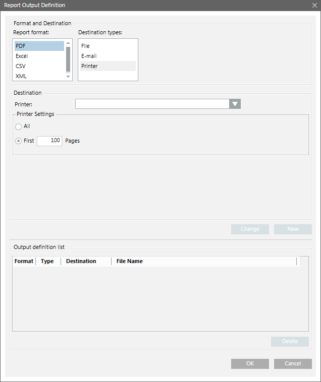

Destination Type – Printer
The Report Output Definition dialog box allows you to send a Report Output Definition to a printer.
You can print all or the first 100 (default) pages. You can edit the default and enter the number of pages to be printed.
Currently only PDF report format is supported for printing.
To print a PDF report format on a printer, you must configure a server printer.
The document to be printed depends on the sorting you applied to the columns of a table.
